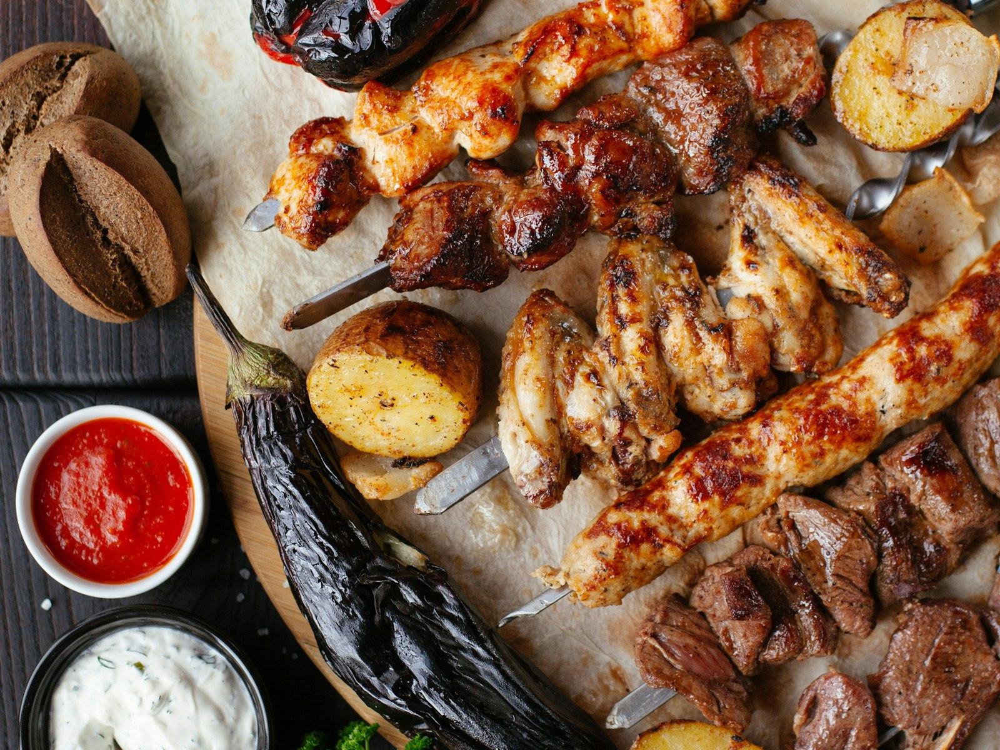
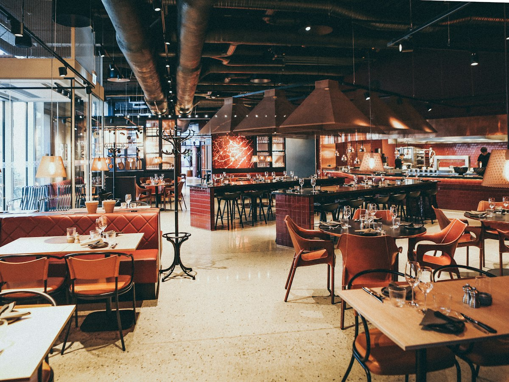
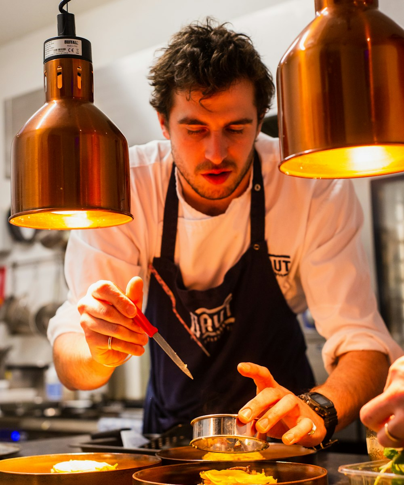

Carne de sol, baião, galinha caipira e tapioca.
Cozinha nordestina em Manaíra. Peça pelo site e o pedido chega pronto no nosso WhatsApp, com endereço e pagamento.
- Entrega em 40 a 60 min
- Retirada em 25 min
- Pix, cartão ou dinheiro

Pedindo aqui, o preço é o do salão
Nos aplicativos, os pratos custam até 20% a mais por causa das taxas. Pelo site, o valor é o mesmo do cardápio da casa.


A casa
O Tacho abriu em 2016 numa garagem em Manaíra, com seis mesas e as receitas da Dona Socorro Lima, que veio de Patos para João Pessoa nos anos 80.
A carne de sol é curada aqui, o feijão verde vem da feira da Torre e o doce de leite é apurado num tacho de cobre que ela trouxe do sertão. O nome veio daí.
Hoje são 18 mesas. A cozinha continua pequena, e a Dona Socorro ainda prova o caldo antes de abrir a porta.
Socorro, Rafael e equipe
Horários
Taxa de entrega
Pedido mínimo para entrega: R$ 40. Outros bairros, consulte pelo WhatsApp.
Onde fica
Av. Exemplo, 000 · Manaíra
João Pessoa, PB
Reservas para grupos a partir de 8 pessoas pelo WhatsApp (83) 90000-0000.
Abrir no mapa